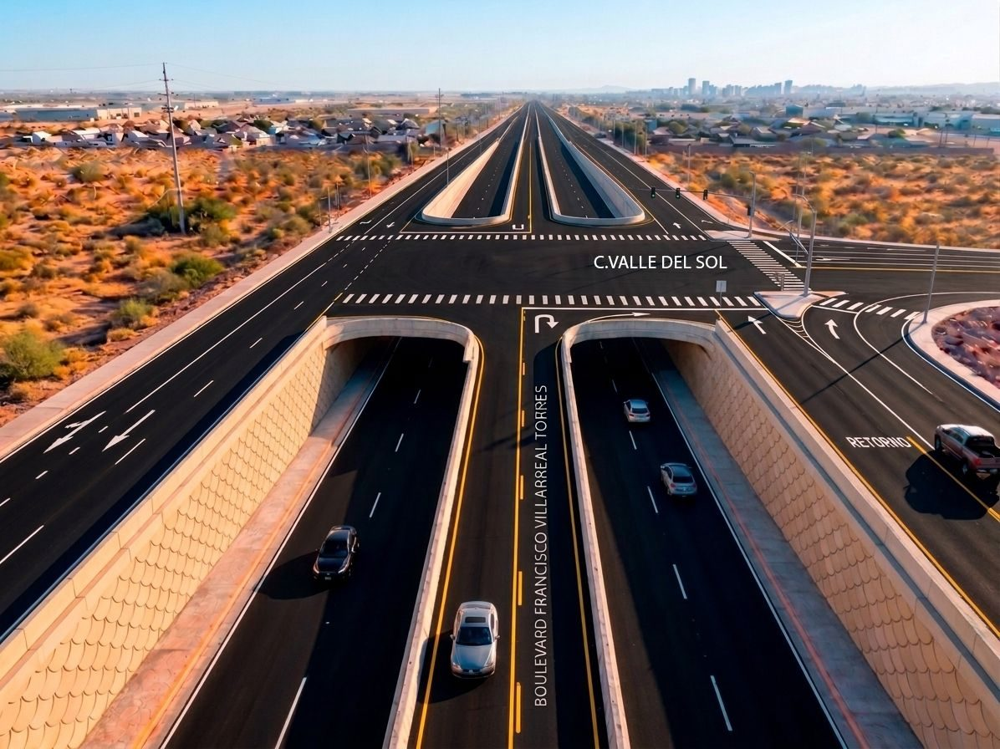
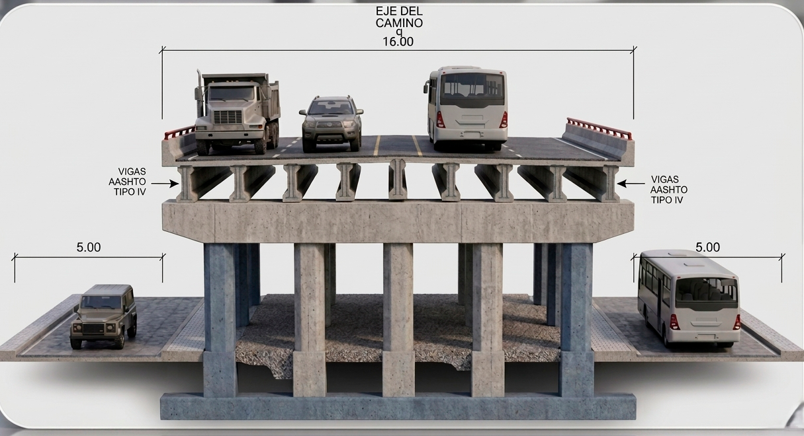
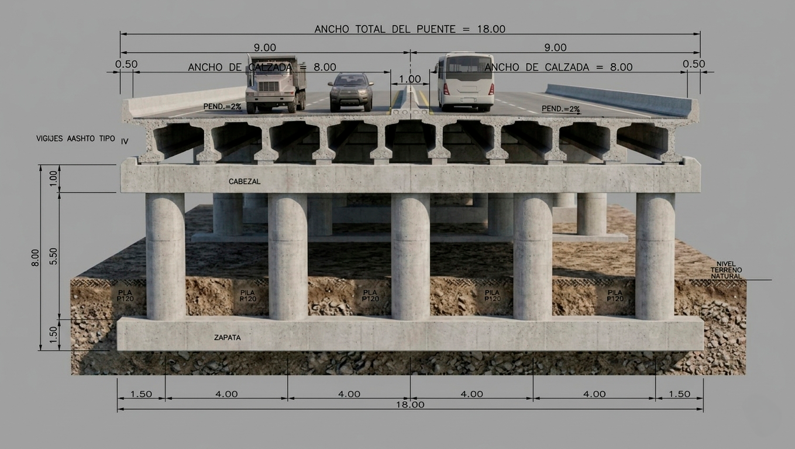
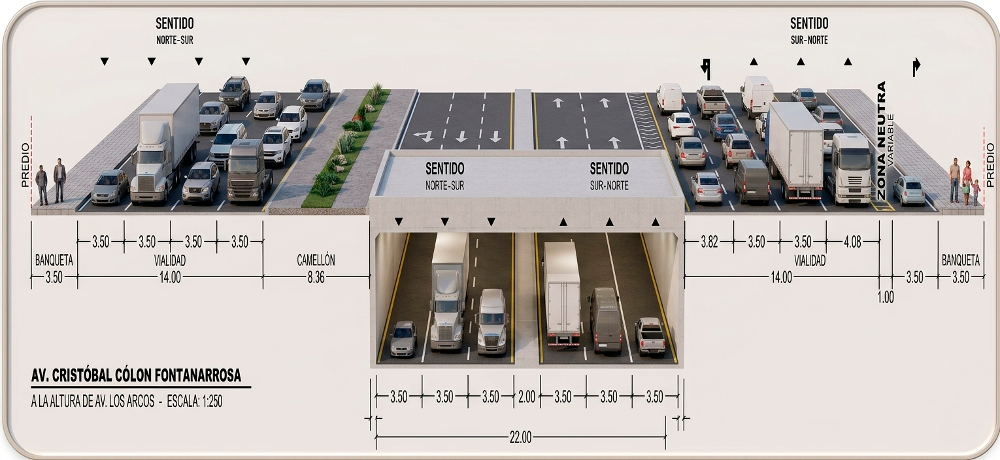
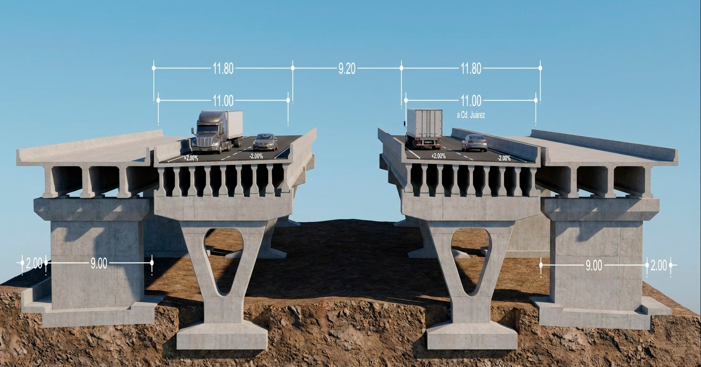

Construcción de Pasos a Desnivel y Obras Viales
Nueve obras que
mueven a Chihuahua.
Seis pasos a desnivel en Chihuahua capital y tres en Ciudad Juárez — el programa de infraestructura vial del Gobierno del Estado. Parte de los compromisos del 4.º Informe de la Gobernadora Maru Campos.


02 — Puentes en Chihuahua
Seis pasos, una intervención estructurada.
Un sistema integral de pasos a desnivel que atiende los principales puntos de conflicto vial de la ciudad, concentrado en los corredores más saturados.
- Zona Oriente: conexión con el Aeropuerto Internacional — Palestina y Quinta Real.
- Zona Norte: corredor Av. Tecnológico — salida hacia Ciudad Juárez (Los Arcos, Desarrollo, G. Prieto Luján).
- Zona Suroeste: salida hacia Cuauhtémoc — Silvestre Terrazas.
- Periodo estimado: 12 meses · concluir antes del cierre de la administración.

Diseño técnico

SuperiorLicitación · inicia mayo
Chihuahua · Paso 01 / 06
Paso Superior
Fuerza Aérea — Palestina
Zona Oriente · Av. Palestina y Av. Fuerza Aérea
- Longitud560 m · ancho 16.00 m
- Estructuras2 — 4 claros (crucero) + 5 claros (FFCC)
- Carriles4 · muros de tierra armada
- Inversión+ $280 millones
+20,000vehículos por sentido beneficiados · elimina el cruce a nivel con el ferrocarril

Diseño técnico

SuperiorLicitación · fin de abril
Chihuahua · Paso 02 / 06
Paso Superior
Juan Pablo II — Quinta Real
Zona Oriente · Av. Juan Pablo II y Av. Quinta Real
- Longitud440 m · 7 claros · ancho 18.0 m
- Carriles4 + camellón central + parapetos
- DistribuciónGlorieta bajo el claro central
- Inversión+ $160 millones
+15,000vehículos por sentido · mejora el acceso al Aeropuerto Internacional

Diseño técnico

InferiorProceso técnico-legal
Chihuahua · Paso 03 / 06 · Corredor Tecnológico
Paso Inferior
Tecnológico — Av. Los Arcos
Zona Norte · a la altura de Pistolas Meneses
- TipologíaDeprimido · 3 carriles por sentido
- LateralesCruce semaforizado direccional
- ConexiónSalida norte → Carretera federal 45
- Inversión$183.6 millones
+43,000vehículos por sentido · el cruce de mayor volumen del corredor

Diseño técnico

SuperiorProceso técnico-legal
Chihuahua · Paso 04 / 06 · Corredor Tecnológico
Paso Superior
Tecnológico — Av. Desarrollo
Zona Norte · último semáforo hacia la salida a Juárez
- Estructuras2 separadas · 3 carriles cada una
- LateralesCruce semaforizado direccional
- ConexiónSalida norte → Carretera federal 45
- Inversión$200.7 millones
+35,000vehículos por sentido · flujo continuo en el corredor Tecnológico
03 — Ciudad Juárez
Tres pasos sobre Av. Las Torres.
Movilidad urbana en la frontera: tres pasos inferiores que destraban el corredor Villarreal Torres, alineados al avance del Juárez Bus / BRT 4.
- $420 millones de inversión en los tres pasos a desnivel.
- Objetivo: mejorar fluidez, reducir tiempos e incrementar la seguridad vial.
- Atienden la industria maquiladora, el aeropuerto y los sectores de mayor crecimiento.


InferiorSep 2026 — Jun 2027
Ciudad Juárez · Paso 02 / 03
Paso Inferior
Av. Las Torres — Tomás Fernández
Corredor industrial · Villarreal Torres
- Inversión$120 millones
- PeriodoSeptiembre 2026 — Junio 2027
- BeneficiaTrabajadores de la industria maquiladora
Maquilamejora la circulación hacia el aeropuerto y los corredores industriales
09 — Momento actual
Tres frentes,
una misma misión.
- Conectividad carretera — red regional que impulsa la economía.
- Movilidad urbana — nueve pasos a desnivel en Chihuahua y Juárez.
- Infraestructura social — salud, cultura y espacios públicos.
«Estamos ejecutando obra pública que impacta directamente en la vida diaria de las personas, tanto en sus traslados como en el acceso a servicios.»
Dependencia
Secretaría de Comunicaciones y Obras Públicas
Ponente
M.I. Jorge Chanez · Secretario SCOP
Gobierno
Estado de Chihuahua · 2026